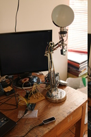
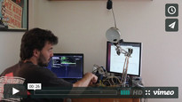
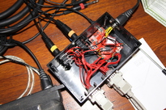
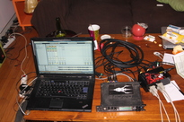
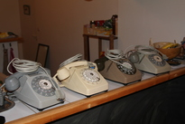
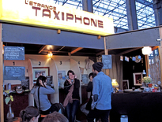
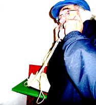

The idea behind this work was to explore how to interface Arduino with Leapmotion, and to see what would be the precision we could get with some basic servos.
Since there is no lib to directly connect the Leapmotion to the Arduino, I used node.js to connect to the websocket server that streams the Leapmotion data and the johnny-five node.js lib to control the Arduino and the servos.
This work has been featured on Hack a Day and Adafruit blog.
More info here: Interfacing Leap Motion with Arduino thanks to Node.js
 "L'étrange taxiphone" is an interactive installation, made with the collective Etrange Miroir, that questions the vision we have about immigrants. Relying on a scenography that represents a phone booth, the spectator compose a phone number and hears testimonials of migrants, speaking about how they are perceived by the society.
The rotary phones are Arduino controlled, and each composed phone number will be translated as a MIDI message and sent to Ableton Live to control the current played sound.
Source code is available here: https://github.com/xseignard/taxiphone
    Blablabla.
{kind=link}
{kind=link}
{kind=link}
{kind=link}
{kind=link}
{kind=link}
{kind=link}